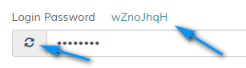
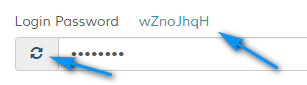

Add Staff
Overview
Enables adding of new support staff. Please read carefully. Click example images to display full size version in new tab/window.
Adminstrator - Default
When the system is installed, a staff administrator (global user) is created. This staff member cannot be deleted to prevent you from locking yourself out of the system. This staff
member has access to all areas of the admin interface regardless of access and permission settings. It will always default to an administrator account.
Other administrators can be added (see below).
Note that other staff administrators cannot perform the following for security:
1. Edit the main global or default administrator.
2. Set another staff member as administrator
Other administrators can be added (see below).
Note that other staff administrators cannot perform the following for security:
1. Edit the main global or default administrator.
2. Set another staff member as administrator
Screenshot
{kind=link}
Personal
Enable Account - If enabled, sets account status to active.
Administrator - If set, staff member has access to all areas of the admin control panel, regardless of settings. All system notifications are sent to administrators unless email notifications are disabled. Enable with discretion. Note that this option is ONLY available to the main global user (created above). This prevents another administrator from making another staff member an administrator.
Send Welcome Email - If enabled, sends welcome email on account creation ONLY.
Name/Alias - Enter staff name or alias.
Email Address - Enter staff email. Must be unique.
Login Password - Enter account password. Click the icon to auto create password. Password generated will be shown. See the following screenshot:

When editing, leave blank for same password.
Timezone - Timezone for staff account. If not set, defaults to main timezone in settings.
Language - Optional. Alternative language for staff. Defaults to default language in settings if not set. If this is set, all language operations will load the language from the set language folder. For example, email templates. If any of the language files are missing, the system may throw errors.
Administrator - If set, staff member has access to all areas of the admin control panel, regardless of settings. All system notifications are sent to administrators unless email notifications are disabled. Enable with discretion. Note that this option is ONLY available to the main global user (created above). This prevents another administrator from making another staff member an administrator.
Send Welcome Email - If enabled, sends welcome email on account creation ONLY.
Name/Alias - Enter staff name or alias.
Email Address - Enter staff email. Must be unique.
Login Password - Enter account password. Click the icon to auto create password. Password generated will be shown. See the following screenshot:

When editing, leave blank for same password.
Timezone - Timezone for staff account. If not set, defaults to main timezone in settings.
Language - Optional. Alternative language for staff. Defaults to default language in settings if not set. If this is set, all language operations will load the language from the set language folder. For example, email templates. If any of the language files are missing, the system may throw errors.
Admin Access
Use the checkboxes to determine which pages staff member can access. Clicking a main heading (in bold) will select/unselect all in that group. You should
be careful when allowing access to certain pages. Ideally, pages such as the settings page, should be visible to the main admin (ID:1) only.
Additional Page Rules (Comma delimit) - If a page isn`t accessible after a checkbox has been checked (or if you create new admin pages), enter the the page param value here, comma delimited. The page param value is visible in the url and is after the "p" variable. For example, for the "Add Staff" page, the param is "team".
Any page params set will allow access to staff member.
Additional Page Rules (Comma delimit) - If a page isn`t accessible after a checkbox has been checked (or if you create new admin pages), enter the the page param value here, comma delimited. The page param value is visible in the url and is after the "p" variable. For example, for the "Add Staff" page, the param is "team".
Any page params set will allow access to staff member.
Ticket Access
Departments - If staff member has access to tickets in certain departments only, specify departments.
View Assigned Tickets ONLY - If enabled, staff member can view only tickets assigned to them. Note that you should give staff access to at least the open tickets screen as well or else the system may not load certain ticket data correctly. On the open ticket screen they will only see their assigned tickets.
View Assigned Tickets ONLY - If enabled, staff member can view only tickets assigned to them. Note that you should give staff access to at least the open tickets screen as well or else the system may not load certain ticket data correctly. On the open ticket screen they will only see their assigned tickets.
Permissions
Has Ticket Notepad Access - If enabled, staff member has access to ticket notepad for backend ticket notes.
Enable Entry Log - If enabled, add date/time/ip stamp to entry log on login.
Can Merge Tickets - If enabled, staff member can merge tickets.
Can Update Profile - If enabled, staff member can update their profile and their name is a hyperlink to their profile page.

Note that for administrators, clicking this link shows the main staff edit screen. Other staff have minimal profile page.
Can View Help Link to Documentation - If enabled, staff member can view docs link in header.

Can View Ticket History - If enabled, can view ticket history. Appears at bottom of ticket.
Has Delete Privileges - If enabled, staff member has delete privileges on any page which they can view. This should be allowed cautiously.
Can Close Tickets - If enabled, staff member can close tickets
Can Lock Tickets - If enabled, staff member can lock tickets
Can Edit Tickets - If enabled, staff member can edit tickets
Can Edit Ticket Replies - If enabled, can edit ticket replies.
Can View Work Timer Controls (Applicable only if work timer is enabled in settings) - If enabled, staff member can view work timer controls. These appear on the ticket reply page beneath the current work time. Controls enable staff to start / stop or reset the timer. Work time is added to total work time, which is displayed at the top of the ticket page.
Start Work Timer As Soon As Ticket is Viewed (Applicable only if work timer is enabled in settings) - If enabled, timer starts immediately when ticket is viewed. Recommended as this helps staff who forget to start the timer who have access to the worktime controls.
Can Edit Ticket Work Time (Applicable only if work timer is enabled in settings) - If enabled, staff member can edit the ticket work time. This is not assumed if the edit ticket permissions are allowed, this is a separate permission.
Can Send Update Notifications to Other Staff When Replying to Ticket - If enabled, option is shown on ticket reply screen to send notifications to other support staff to notify them of a ticket update.
Can View F.A.Q History (Applicable only if history is enabled in settings) - If enabled, staff member can view F.A.Q question update history on question edit screen.
Enable Entry Log - If enabled, add date/time/ip stamp to entry log on login.
Can Merge Tickets - If enabled, staff member can merge tickets.
Can Update Profile - If enabled, staff member can update their profile and their name is a hyperlink to their profile page.
Note that for administrators, clicking this link shows the main staff edit screen. Other staff have minimal profile page.
Can View Help Link to Documentation - If enabled, staff member can view docs link in header.
Can View Ticket History - If enabled, can view ticket history. Appears at bottom of ticket.
Has Delete Privileges - If enabled, staff member has delete privileges on any page which they can view. This should be allowed cautiously.
Can Close Tickets - If enabled, staff member can close tickets
Can Lock Tickets - If enabled, staff member can lock tickets
Can Edit Tickets - If enabled, staff member can edit tickets
Can Edit Ticket Replies - If enabled, can edit ticket replies.
Can View Work Timer Controls (Applicable only if work timer is enabled in settings) - If enabled, staff member can view work timer controls. These appear on the ticket reply page beneath the current work time. Controls enable staff to start / stop or reset the timer. Work time is added to total work time, which is displayed at the top of the ticket page.
{kind=link}
Start Work Timer As Soon As Ticket is Viewed (Applicable only if work timer is enabled in settings) - If enabled, timer starts immediately when ticket is viewed. Recommended as this helps staff who forget to start the timer who have access to the worktime controls.
Can Edit Ticket Work Time (Applicable only if work timer is enabled in settings) - If enabled, staff member can edit the ticket work time. This is not assumed if the edit ticket permissions are allowed, this is a separate permission.
Can Send Update Notifications to Other Staff When Replying to Ticket - If enabled, option is shown on ticket reply screen to send notifications to other support staff to notify them of a ticket update.
Can View F.A.Q History (Applicable only if history is enabled in settings) - If enabled, staff member can view F.A.Q question update history on question edit screen.
Other Options - Mailbox
Enable Mailbox System - If enabled, staff member can access the internal messaging system via the header.
Can Delete Messages in Mailbox - If enabled, visitor can delete mailbox messages. Note that this is NOT reliant on the "Has Delete Privileges" being set to yes. This enables you to enable mailbox deleting ONLY if required.
On Login, Go to Mailbox if at least 1 Unread Message in Inbox - If enabled, visitor will be directed to mailbox if at least 1 unread message exists in the inbox on login.
Send Message Notification to Recipient Email Address(es) - If enabled, email notification is sent to staff member if other staff member sends mailbox message.
Max Folders - Maximum folders allowed. 0 for no limit.
Auto Purge Messages in Bin Every X Days (includes Unread) - If this is utilised, messages will be auto purged from staff mailbox after x amount of days. Useful to prevent database from keeping entries deemed too old. Enable cautiously, deleted messages cannot be recovered.
Can Delete Messages in Mailbox - If enabled, visitor can delete mailbox messages. Note that this is NOT reliant on the "Has Delete Privileges" being set to yes. This enables you to enable mailbox deleting ONLY if required.
On Login, Go to Mailbox if at least 1 Unread Message in Inbox - If enabled, visitor will be directed to mailbox if at least 1 unread message exists in the inbox on login.
Send Message Notification to Recipient Email Address(es) - If enabled, email notification is sent to staff member if other staff member sends mailbox message.
Max Folders - Maximum folders allowed. 0 for no limit.
Auto Purge Messages in Bin Every X Days (includes Unread) - If this is utilised, messages will be auto purged from staff mailbox after x amount of days. Useful to prevent database from keeping entries deemed too old. Enable cautiously, deleted messages cannot be recovered.
Other Options - Email Digest
Enable Email Digest - If enabled and email digest is being used, sends email notification to staff members with info about tickets.
Include Options - Specify which tickets to include in emails. If none are set, no emails are sent. Only included if permissions allow.
Restrict to Certain Days - Restrict emails to certain days. If none are set, emails are sent on ALL days. This is useful if you want to omit emails to certain staff on certain days.
The 'Run Now' options allow you to manually run the email digest for ALL staff (who have this option enabled) or an individual staff member only (when on edit screen).
IMPORTANT: If you are using the 'Run Now' option for a staff member via their edit screen, you need to save any changes before you run the option.
Include Options - Specify which tickets to include in emails. If none are set, no emails are sent. Only included if permissions allow.
Restrict to Certain Days - Restrict emails to certain days. If none are set, emails are sent on ALL days. This is useful if you want to omit emails to certain staff on certain days.
The 'Run Now' options allow you to manually run the email digest for ALL staff (who have this option enabled) or an individual staff member only (when on edit screen).
IMPORTANT: If you are using the 'Run Now' option for a staff member via their edit screen, you need to save any changes before you run the option.
Other Options - Email Settings
Enable Email Notifications - If enabled, sends email notification if tickets are assigned or opened.
Enable Notification for Spam Tickets - If enabled, send notifications if imap tickets are flagged as spam. If notifications are off, this is ignored.
Display Signature in Emails - If enabled (and signature exists), signature is included in email notifications to visitors.
Signature (Optional - HTML not allowed) - If set, displays at the bottom of all ticket replies. Signatures should not contain HTML and not be too distracting for visitors.
Ticket 'From' Name - If staff member replies to ticket, or assigns ticket etc, this is the from name mail header. If not set, defaults to name/alias.
Ticket 'From' Email Address - If staff member replies to ticket, or assigns ticket etc, this is the from mail header. If not set, defaults to email address.
Additional Notification Email Addresses - Additional notification addresses for staff member, comma delimited. Optional.
Enable Notification for Spam Tickets - If enabled, send notifications if imap tickets are flagged as spam. If notifications are off, this is ignored.
Display Signature in Emails - If enabled (and signature exists), signature is included in email notifications to visitors.
Signature (Optional - HTML not allowed) - If set, displays at the bottom of all ticket replies. Signatures should not contain HTML and not be too distracting for visitors.
Ticket 'From' Name - If staff member replies to ticket, or assigns ticket etc, this is the from name mail header. If not set, defaults to name/alias.
Ticket 'From' Email Address - If staff member replies to ticket, or assigns ticket etc, this is the from mail header. If not set, defaults to email address.
Additional Notification Email Addresses - Additional notification addresses for staff member, comma delimited. Optional.
Other Options - Notes
Backend notes. Optional.
Forgot Password
If you have forgot your password main administrator password, you`ll need to use the reset option.